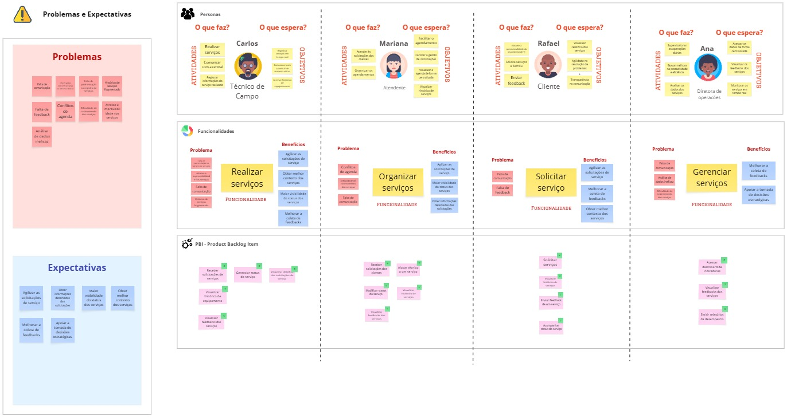
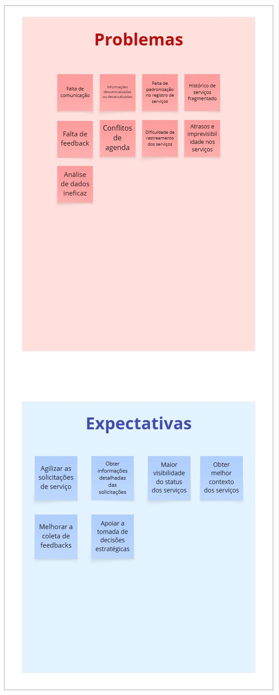
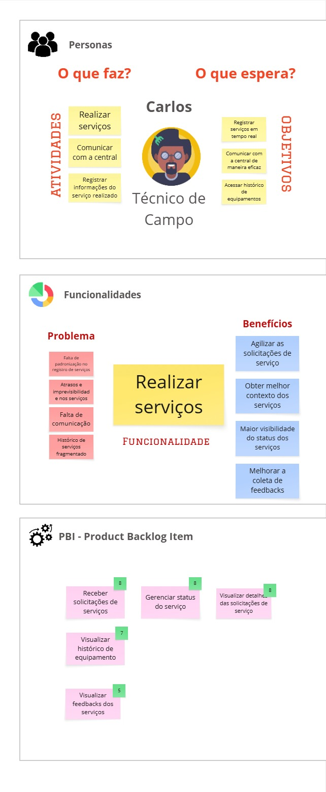
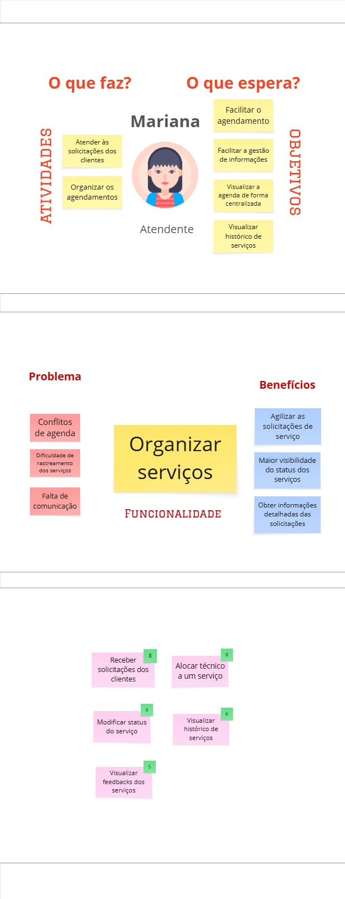
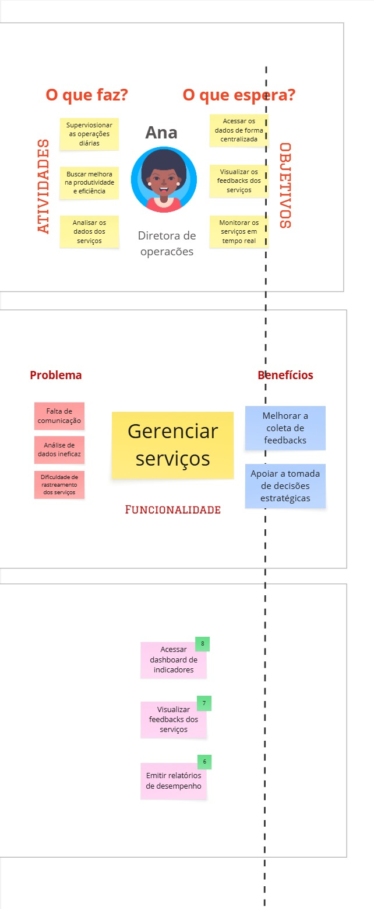

PBB
O que é PBB?
Product Backlog Building (PBB) é a prática de detalhar e priorizar itens de backlog de produto de forma colaborativa, garantindo que o time de desenvolvimento entenda claramente as funcionalidades necessárias, seus critérios de aceitação e cenários de teste (BDD). O PBB auxilia na comunicação entre stakeholders, no planejamento de entregas e na definição de qualidade esperada para cada User Story.
PBB Canvas

Problemas e Expectativas identificadas

As funcinoalidades foram organizadas por persona, as imagens a seguir contêm as personas com suas atividades e objetivos, e logo abaixo a sua funcinoalidade associada e seu conjunto de PBIs
Carlos - Técnico de Campo

Mariana - Atendente

Rafael - Cliente

Ana - Diretora de operações

PBB Canvas - Miro
Segue o mesmo quadro PBB Canvas no miro para melhor visualização
User Stories (US)
- US01: Como Técnico, posso receber solicitações de serviços para agilizar as solicitações de serviço.
- US02: Como Técnico, posso ver detalhes dos serviços para obter informações detalhadas das solicitações.
- US03: Como Técnico, posso gerenciar o status do serviço (solicitado, em andamento, pausado, concluído, cancelado) para maior visibilidade do status dos serviços.
- US04: Como Técnico, posso visualizar o histórico do equipamento para obter melhor contexto dos serviços.
- US05: Como Técnico, posso visualizar feedbacks dos serviços anteriores para melhorar a coleta de feedbacks.
- US06: Como Atendente, posso receber novas solicitações dos clientes em tempo real para agilizar as solicitações de serviço.
- US07: Como Atendente, posso alocar um técnico a um serviço para agilizar as solicitações de serviços.
- US08: Como Atendente, posso alterar o status do serviço para maior visibilidade do status dos serviços.
- US09: Como Atendente, posso visualizar o histórico de serviços para obter melhor contexto dos serviços.
- US10: Como Atendente, posso visualizar os feedbacks dos serviços para melhorar a coleta de feedbacks.
- US11: Como Cliente, posso solicitar serviços para agilizar as solicitações de serviços.
- US12: Como Cliente, posso visualizar histórico de serviços prestados para obter melhor contexto dos serviços.
- US13: Como Cliente, posso enviar feedback de um serviço para melhorar a coleta de feedbacks.
- US14: Como Cliente, posso acompanhar o status do meu serviço para maior visibilidade do status dos serviços.
- US15: Como Diretora, posso acessar um painel com indicadores de desempenho e satisfação para apoiar a tomada de decisões estratégicas.
- US16: Como Diretora, posso visualizar os feedbacks dos serviços no meu dashboard para melhorar a coleta de feedbacks.
- US17: Como Diretora, posso emitir relatórios de desempenho consolidados para apoiar a tomada de decisões estratégicas.
Critérios de Aceitação
US03: Como Técnico, posso gerenciar o status do serviço (solicitado, em andamento, pausado, concluído, cancelado) para maior visibilidade do status dos serviços.
- No modal dos serviços, é possível alterar o status do serviço entre solicitado, em andamento, pausado, concluído ou cancelado.
- Se o técnico escolher “Concluído”, abre automaticamente um formulário de conclusão no qual ele deve informar o horário de conclusão (data e hora), confirmar que o equipamento foi reparado (checkbox), descrever o que foi feito (texto livre) e coletar a assinatura ou confirmação digital do cliente — sem o preenchimento completo desses campos, o serviço não será marcado com status concluído.
- Se o técnico escolher “Cancelado”, aparece um modal de confirmação “Tem certeza que deseja cancelar este serviço?” antes de aplicar.
- Após selecionar e confirmar o novo status, a alteração é salva, refletindo automaticamente no Grid de Serviços e na tela do cliente, sem precisar recarregar a página.
US04: Como Técnico, posso visualizar o histórico do equipamento para obter melhor contexto dos serviços.
- Na área de detalhes do serviço, exibe um botão ou aba “Histórico de Intervenções do Equipamento X”.
- Ao clicar/expandir, o sistema lista todas as intervenções daquele equipamento em ordem decrescente de data, mostrando data/hora, técnico e descrição resumida.
US06: Como Atendente, posso receber novas solicitações dos clientes em tempo real para agilizar as solicitações de serviço.
- Quando o cliente criar um chamado, o Grid de Serviços exibirá um alerta, com nome do cliente, tipo de serviço e localização.
- No alerta aparece o botão “Alocar técnico”, que ao ser clicado abre uma tela de detalhes da solicitação.
US07: Como Atendente, posso alocar um técnico a um serviço para agilizar as solicitações de serviços.
- No Grid de Serviços, ao selecionar o serviço, haverá um botão “Alocar Técnico”, que exibirá uma lista de técnicos disponíveis, ordenada pela distância.
- Ao alocar um técnico para o serviço, o status é alterado automaticamente de “Solicitado” para “Em andamento”.
US08: Como Atendente, posso alterar o status do serviço para maior visibilidade do status dos serviços.
- No Grid de Serviços, o atendente pode mudar o status de um chamado diretamente para: “Solicitado”, “Em andamento”, “Pausado”, “Concluído” ou “Cancelado”.
- Ao alterar o status, o técnico alocado e o cliente recebem uma notificação push.
US11: Como Cliente, posso solicitar serviços para agilizar as solicitações de serviços.
- Ao acessar “Solicitar Serviço”, o cliente vê um formulário com:
- Tipo de Serviço (dropdown)
- Descrição Detalhada do problema
- Seleção de Urgência (Normal ou Emergencial)
- Indicação do Equipamento e local
- Opção de anexar até 3 arquivos (PDF, DOCX, JPG, PNG de até 5 MB cada)
- Após enviar, aparece mensagem “Solicitação enviada com sucesso” mostrando o número de protocolo.
- O novo chamado surge imediatamente em “Minhas Solicitações” com status “Solicitado”.
US13: Como Cliente, posso enviar feedback de um serviço para melhorar a coleta de feedbacks.
- Para serviços com status “Concluído”, aparece o botão “Enviar Feedback” que abre um formulário contendo:
- Nota (estrelas de 1 a 5, obrigatório)
- Comentário (texto livre, mínimo de 5 caracteres)
- Opção de anexar até 2 arquivos (PDF, DOCX, JPG ou PNG de até 5 MB cada)
- O botão “Enviar” só é ativado após a nota ser selecionada.
- Ao submeter, o cliente vê a mensagem “Obrigado pelo seu feedback!”.
- Em caso de não envio do feedback em 48 horas, é enviado um lembrete via email para o cliente.
US15: Como Diretora, posso acessar um painel com indicadores de desempenho e satisfação para apoiar a tomada de decisões estratégicas.
- O painel exibe métricas atualizadas como: número total de serviços realizados, tempo médio de atendimento, percentual de SLAs cumpridos e média de satisfação dos clientes.
- Os dados são apresentados de forma visual (gráficos e painéis de destaque), para agilizar a interpretação e entendimento.
- No dashboard, haverá o Grid de Serviços para visualização dos serviços.
US17: Como Diretora, posso emitir relatórios de desempenho consolidados para apoiar a tomada de decisões estratégicas.
- Diretora escolhe diário, semanal ou mensal antes de gerar relatório.
- Relatório deve ser gerado no formato PDF ou Excel com métricas presentes no dashboard (número total de serviços realizados, tempo médio de atendimento, percentual de SLAs cumpridos e média de satisfação dos clientes).
- Diretora pode agendar envio automático do relatório para os colaboradores via e‑mail no início de cada período.
BDD
US03: Como Técnico, posso gerenciar o status do serviço (solicitado, em andamento, pausado, concluído, cancelado) para maior visibilidade do status dos serviços.
CENÁRIO 1: Falha ao concluir sem preencher todos os campos obrigatórios
- DADO QUE o técnico abriu o modal de um serviço e selecionou “Concluído”
- E o formulário de conclusão foi exibido com os campos:
- Horário de conclusão (data e hora)
- Confirmação de reparo (checkbox)
- Descrição do trabalho (textarea)
- Assinatura do cliente (upload de imagem)
- QUANDO ele submeter o formulário preenchendo:
- Horário de conclusão: “2025-06-20 14:30”
- Confirmação de reparo: marcado
- Descrição do trabalho: em branco
- Assinatura do cliente: não anexada
- ENTÃO o sistema não altera o status do serviço
- E exibe a mensagem “Preencha todos os campos de conclusão antes de encerrar”
- E destaca em vermelho os labels “Descrição do trabalho” e “Assinatura do cliente”
CENÁRIO 2: Falha ao concluir com formato de dado inválido
- DADO QUE o técnico abriu o modal de um serviço e selecionou “Concluído”
- E o formulário de conclusão foi exibido
- QUANDO ele submeter o formulário preenchendo:
- Horário de conclusão: “ontem às três” (texto livre)
- Confirmação de reparo: marcado
- Descrição do trabalho: “Troca de filtro”
- Assinatura do cliente: imagem válida
- ENTÃO o sistema não altera o status do serviço
- E exibe a mensagem “Insira data e hora no formato DD/MM/AAAA HH:MM”
- E destaca em vermelho o campo “Horário de conclusão”
CENÁRIO 3: Sucesso ao concluir serviço com formulário completamente válido
- DADO QUE o técnico abriu o modal de um serviço e selecionou “Concluído”
- E preencheu o formulário de conclusão com:
- Horário de conclusão: “20/06/2025 14:30”
- Confirmação de reparo: marcado
- Descrição do trabalho: “Substituição de válvula e teste de pressão OK”
- Assinatura do cliente: imagem JPG de 300 KB
- QUANDO ele clicar em “Salvar”
- ENTÃO o status do serviço muda para “Concluído”
- E o Grid de Serviços e a tela do cliente atualizam imediatamente para “Concluído”
CENÁRIO 4: Cancelar serviço após confirmação
- DADO QUE o técnico abriu o modal de um serviço e selecionou “Cancelado”
- QUANDO ele confirmar a ação no modal “Tem certeza que deseja cancelar este serviço?”
- ENTÃO o status do serviço muda para “Cancelado”
- E o Grid de Serviços e a tela do cliente refletem o cancelamento
US06: Como Atendente, posso receber novas solicitações dos clientes em tempo real para agilizar as solicitações de serviço.
CENÁRIO 1: Exibir alerta ao receber nova solicitação
- DADO QUE estou na Tela de Grid de Serviços mostrando os chamados existentes
- E o cliente “Empresa Alpha” cria um chamado do tipo “Manutenção Preventiva” em “Unidade X”
- QUANDO o chamado for registrado no sistema
- ENTÃO aparece instantaneamente um alerta no Grid de Serviços
- E o alerta mostra “Empresa Alpha”, “Manutenção Preventiva” e “Unidade X”
- E exibe o botão “Alocar técnico”
CENÁRIO 2: Abrir detalhes da solicitação a partir do alerta
- DADO QUE o alerta com o botão “Alocar técnico” está visível no Grid de Serviços
- QUANDO eu clicar em “Alocar técnico”
- ENTÃO deve abrir a Tela de Detalhes da Solicitação
- E a Tela de Detalhes exibe cliente, tipo de serviço, localização, data e urgência
US11: Como Cliente, posso solicitar serviços para agilizar as solicitações de serviços.
CENÁRIO 1: Sucesso ao enviar solicitação com todos os campos válidos
- DADO QUE o cliente está na Tela de “Solicitar Serviço”
-
E preencheu:
- Tipo de Serviço: “Manutenção Corretiva”
- Descrição Detalhada: “Motor não liga ao acionar”
- Urgência: “Emergencial”
- Equipamento/Local: “Equipamento A123”
- Anexou arquivos: “foto_problema.jpg” (JPEG, 1,2 MB) e “manual_técnico.pdf” (PDF, 450 KB)
-
QUANDO clicar no botão “Enviar”
- ENTÃO o sistema mostra “Solicitação enviada com sucesso — Protocolo #20250620-001”
- E o novo chamado aparece imediatamente em “Minhas Solicitações” com status “Solicitado”
CENÁRIO 2: Falha ao tentar enviar sem preencher campos obrigatórios
- DADO QUE o cliente deixou em branco o campo “Descrição Detalhada”
- QUANDO clicar em “Enviar”
- ENTÃO o sistema não envia a solicitação
- E exibe mensagem “Preencha a descrição do problema para continuar”
- E realça em vermelho o campo “Descrição Detalhada”
CENÁRIO 3: Falha ao anexar arquivo com tipo ou tamanho inválido
- DADO QUE o cliente tenta anexar:
- “video.mp4” (MP4, 10 MB)
- QUANDO clicar em “Enviar”
- ENTÃO o sistema não envia a solicitação
- E exibe mensagem “Anexe apenas PDF ou JPG de até 5 MB”
- E remove o arquivo inválido da lista de anexos
US13: Como Cliente, posso enviar feedback de um serviço para melhorar a coleta de feedbacks.
CENÁRIO 1: Sucesso ao enviar feedback com todos os campos válidos
- DADO QUE o serviço está com status “Concluído” na “Minhas Solicitações”
- E o cliente clica no botão “Enviar Feedback”
- E preenche:
- Nota: 4 estrelas
- Comentário: “Atendimento rápido e eficiente” (≥ 15 caracteres)
- Anexo: “evidência.jpg” (JPG, 1 MB)
- QUANDO clicar em “Enviar”
- ENTÃO o sistema mostra “Obrigado pelo seu feedback!”
- E registra nota, comentário e anexo no perfil do serviço
CENÁRIO 2: Falha ao não selecionar nota ou comentário insuficiente
- DADO QUE o cliente:
- não selecionou nenhuma estrela
OU escreveu “OK” (2 caracteres) no comentário - QUANDO clicar em “Enviar”
- ENTÃO o sistema não envia o feedback
- E exibe “Selecione uma nota de 1 a 5 e escreva ao menos 5 caracteres”
- E destaca em vermelho os campos inválidos
CENÁRIO 3: Envio de lembrete após 48 horas sem feedback
- DADO QUE se passaram 48 horas desde que o serviço foi concluído
- E o cliente ainda não enviou feedback
- QUANDO o sistema processar a rotina diária de lembretes
- ENTÃO é enviado um e‑mail automático para o cliente com:
- Assunto: “Lembrete: Avalie seu serviço Concluído”
- Link direto ao formulário de feedback
US17: Como Diretora, posso emitir relatórios de desempenho consolidados para apoiar a tomada de decisões estratégicas.
CENÁRIO 1: Sucesso ao gerar relatório diário
- DADO QUE a Diretora está na tela de “Relatórios”
- E escolheu o período “Diário”
- QUANDO ela clicar em “Gerar Relatório”
- ENTÃO o sistema deve baixar um arquivo PDF com as métricas do dashBoard
- E também disponibilizar um arquivo Excel com as mesmas métricas
CENÁRIO 2: Falha ao tentar gerar sem selecionar período
- DADO QUE a Diretora está na tela de “Relatórios”
- E não selecionou “Diário”, “Semanal” ou “Mensal”
- QUANDO ela clicar em “Gerar Relatório”
- ENTÃO o sistema não inicia a geração
- E exibe a mensagem “Selecione um período antes de gerar o relatório”
CENÁRIO 3: Agendar envio automático de relatório semanal
- DADO QUE a Diretora está na tela de “Relatórios”
- E escolheu o período “Semanal”
- E ativou a opção “Agendar Envio Automático” para enviar toda segunda-feira às 08:00
- QUANDO ela confirmar o agendamento
- ENTÃO o sistema salva essa configuração
- E, na próxima segunda-feira às 08:00, dispara um e‑mail com o PDF e Excel do relatório para os colaboradores cadastrados
Link do documento: Docs PBB
Histórico de Versão
| Data | Versão | Descrição | Autor |
|---|---|---|---|
| 19/06/25 | 1.0 | Criação do Documento | Marcos Bezerra |
| 20/06/25 | 1.1 | Atualizando os benefícios | Marcos Bezerra |
| 20/06/25 | 1.2 | Atualizando o BDD | Marcos Bezerra |
| 13/07/25 | 1.3 | Atualizações da Issue 22 | Marcos Bezerra |